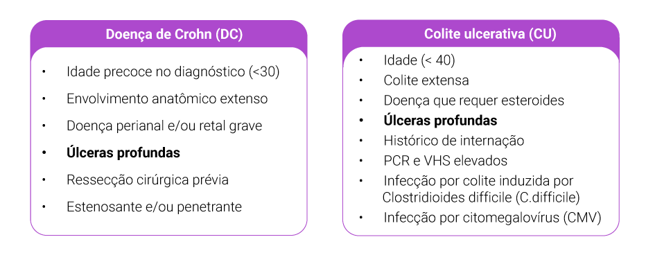
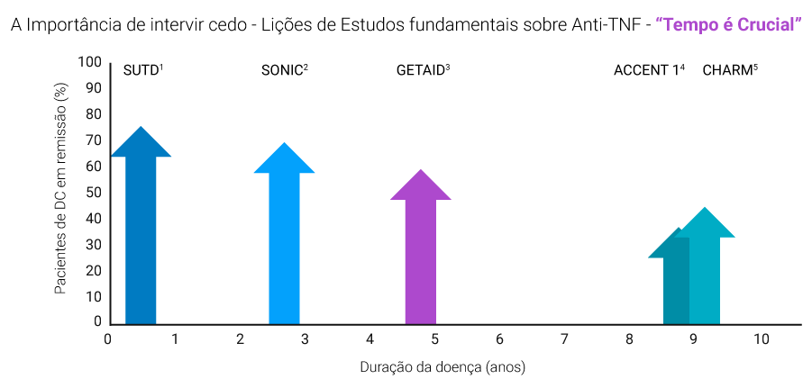
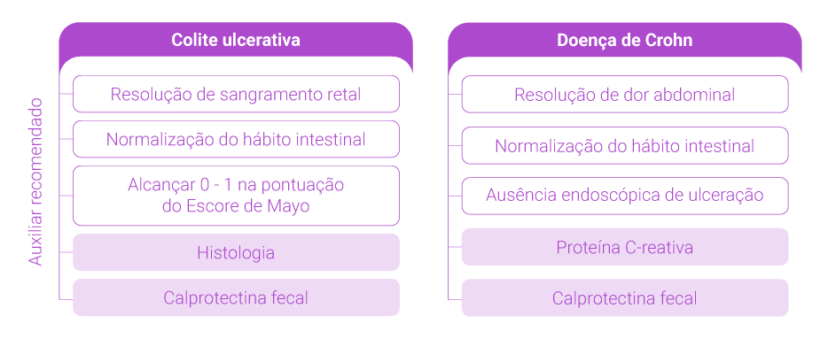
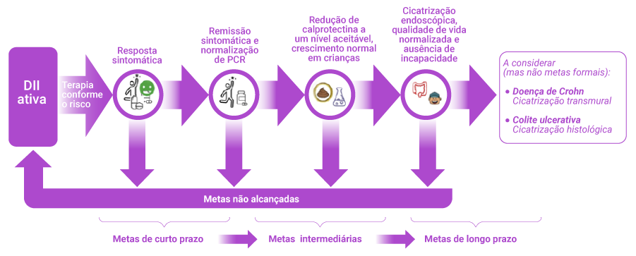
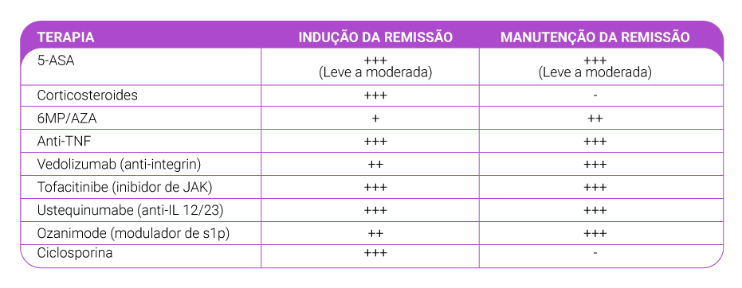
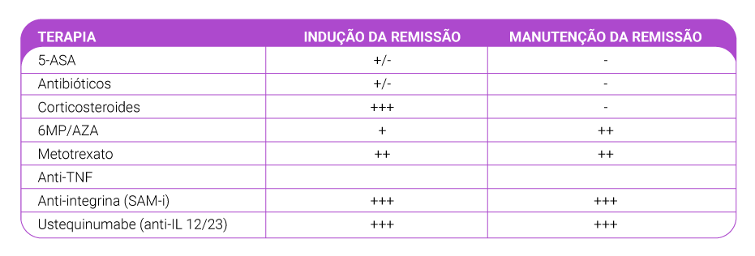
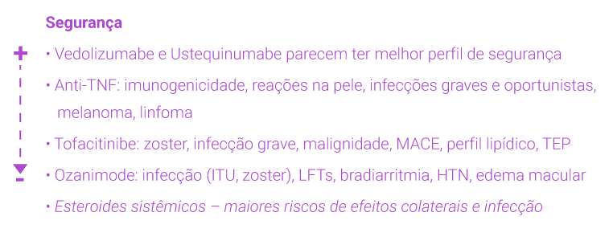
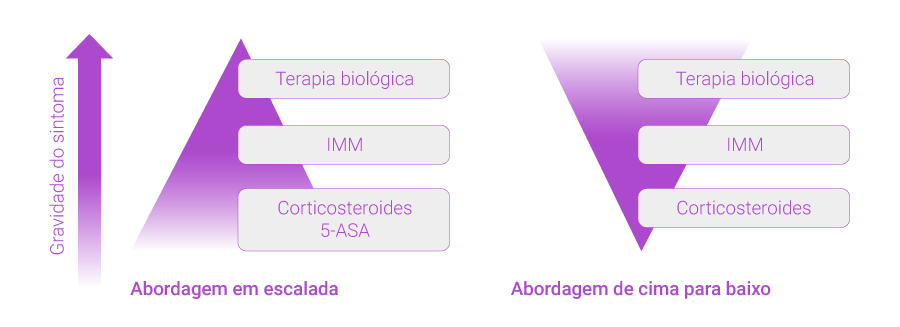

O panorama da doença inflamatória intestinal (DII) está mudando continuamente. À medida que os objetivos do cuidado evoluem, a otimização do tratamento é fundamental para alcançar as metas clínicas mais cedo e com os agentes mais eficazes e seguros para cada paciente. A DII é progressiva e destrutiva, e está associada a uma alta taxa de cirurgia e recorrência. Para deter ou desacelerar a progressão natural e evitar danos, precisamos de otimização e personalização do tratamento.[1-4]
TRATE COM MAIS DISCERNIMENTO E MAIS CEDO, E VÁ MAIS FUNDO PARA ALCANÇAR A META E SER MAIS EFICAZ
TRATE COM DISCERNIMENTO: As decisões de tratamento personalizado devem ser baseadas na estratificação de risco: fatores clínicos, sorologia, genética e achados endoscópicos ajudam na escolha do melhor curso de ação. O surgimento dos medicamentos biológicos em 2000 tornou possível esta questão para pacientes de alto risco: qual mecanismo biológico é mais eficaz e seguro? Precisamos avaliar fatores para doença de alto risco, a carga anterior e a atual da doença, diferenciando a atividade da doença da gravidade da doença.[5, 6]

TRATAR CEDO:Existe uma janela de oportunidade para achatar a progressão da doença com tratamento agressivo, melhorando assim a qualidade de vida. Estudos mostram que a proporção de pacientes com remissão da doença diminui quanto mais a doença dura.[1, 7-11]

TRATE COM MAIS PROFUNDIDADE:A cicatrização da mucosa parece estar associada a melhores resultados em longo prazo: diminuição da probabilidade de uma crise, diminuição da progressão para complicações da doença e diminuição da necessidade de cirurgia ou hospitalização.[12]
TRATE VISANDO UMA META:Os estudos STRIDE e STRIDE II examinaram alvos potenciais para DII como estratégia para o manejo clínico. O STRIDE II adotou esses objetivos clínicos em um período delimitado de tempo. A estratégia de tratamento tendo em vista uma meta é um ciclo que abarca: 1) tratamento; 2) avaliação da meta; 3) ajuste do tratamento; 4) nova avaliação da meta até que os objetivos sejam alcançados. O estudo CALM provou a utilidade desta abordagem.[12-14]
Avaliar resultados cada 3 -6 meses até a remissão; então, a cada 6 - 12 meses


Não trate a DII de modo diferente durante a pandemia de Covid-19
OPÇÕES DE TRATAMENTO:Ao escolher os tratamentos devemos considerar não apenas a severidade da doença (leve, moderada, grave), mas também os estágios do tratamento (indução e manutenção da remissão). Não há evidência do papel dos corticosteroides na manutenção ou remissão. Além disso, estão associados a mais efeitos adversos. Tenha em mente que os riscos da doença e complicações são sempre muito maiores do que os eventos adversos dos medicamentos.[15-22]


PROBLEMAS DE SEGURANÇA[23] A infecção, o câncer e a imunogenicidade são sempre preocupações gerais importantes. Cada agente tem um perfil distinto quanto à segurança e condições associadas.

CONDIÇÕES ASSOCIADAS Quais agentes são mais seguros em caso de condições subjacentes específicas?
Artrite reumatoide: Anti-TNF / Tofacitinibe
Psoríase: Ustequinumabe / Anti-TNF
Artrite associada a DII: Anti-TNF
Espondilite anquilosante: Anti-TNF
Pioderma gangrenoso e eritema nodoso: Anti-TNF
NOVO PARADIGMA DE TRATAMENTO[23] Nossa nova abordagem de cima para baixo difere muito da antiga e tradicional estratégia de escalada. Nosso objetivo é adotar os biológicos eficazes mais cedo, evitando o uso intensivo de corticosteroides. Usados com abuso tanto por pacientes como por médicos, os corticosteroides não mantêm a remissão, têm efeitos colaterais e estão associados ao aumento do risco de infecção grave e mortalidade.

ESCOLHA DO PRIMEIRO AGENTE[23] O primeiro agente será o mais eficaz, principalmente se for otimizado. Embora as vantagens da otimização do tratamento com o Monitoramento Terapêutico de Medicamentos (TDM) estejam bem estabelecidas, ainda é subutilizado. Se não for feito o TDM proativo, deve ser adotada a comboterapia com um imunossupressor.
BENEFÍCIOS DO TDM PROATIVO
Otimiza a terapia biológica para alcançar um limite de concentração do medicamento.
Associado a melhores resultados se comparada à otimização empírica e/ou TDM reativo da terapia anti-TNF.
Recomendado para diminuir ou interromper o uso do infliximabe em remissão clínica.
Otimiza a monoterapia com infliximabe em vez de terapia combinada com IMM.
Considere também que os pacientes expostos ao TNF não respondem tão bem como os pacientes virgens para TNF. As taxas de perda de resposta secundária (SLR) são altas e há algum risco de desenvolver ADA (mais alto com anti-TNF). A imagem completa deve levar em conta:
Fatores específicos da doença: Gravidade da doença, MEI, doença perianal e condições associadas (psoríase, AR).
Fatores específicos do paciente: Idade, Comorbidades (ICC, doença renal, câncer recente); gravidez, preferência do paciente.
Seguradoras/Custeador: Esse tratamento está coberto?
Fatores específicos da medicação: Eficácia (remissão clínica, cicatrização endoscópica, perianal, MEI), segurança, rapidez de início, durabilidade da remissão, imunogenicidade, disponibilidade e dados sobre TDM, forma de administração, tempo no mercado (o diabo que você conhece) e custo.
Conforto do médico.
EFICÁCIA COMPARATIVA[17-21, 24-26] Os ensaios são úteis para avaliar a eficácia dos diferentes tratamentos, mas lembre-se de que os resultados de diferentes ensaios não são comparáveis.
SONIC (Combinação de infliximabe + azatioprina > infliximabe> azatioprina em DC virgem).
UC-SUCCESS (Combinação de infliximabe + azatioprina > infliximabe ou azatioprina em curto prazo em CU).
CYSIF (ciclosporina = infliximabe em CU grave refratária a esteroides) Vedolizumabe é mais eficaz do que adalimumabe para CU moderada a grave virgem de biológicos (remissão clínica 31,3% vs. 22,5%). Ustequinumabe e adalimumabe são igualmente eficazes para DC moderada a grave. Anti-TNF, vedolizumabe, ustequinumabe, ozanimode e tofacitinibe parecem ter eficácia razoável para as indicações testadas
Revisão sistemática e meta-análises de rede
Infliximabe e vedolizumabe parecem ser mais eficazes como agentes de primeira linha para CU
Infliximabe e adalimumabe parecem mais eficazes como agentes de primeira linha para DC